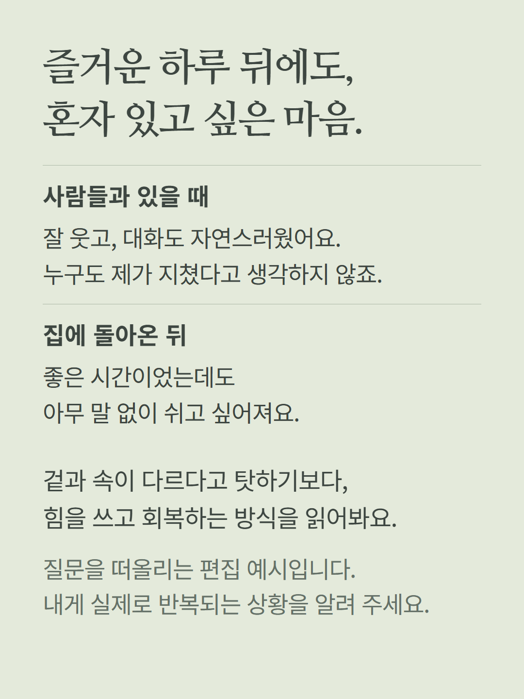
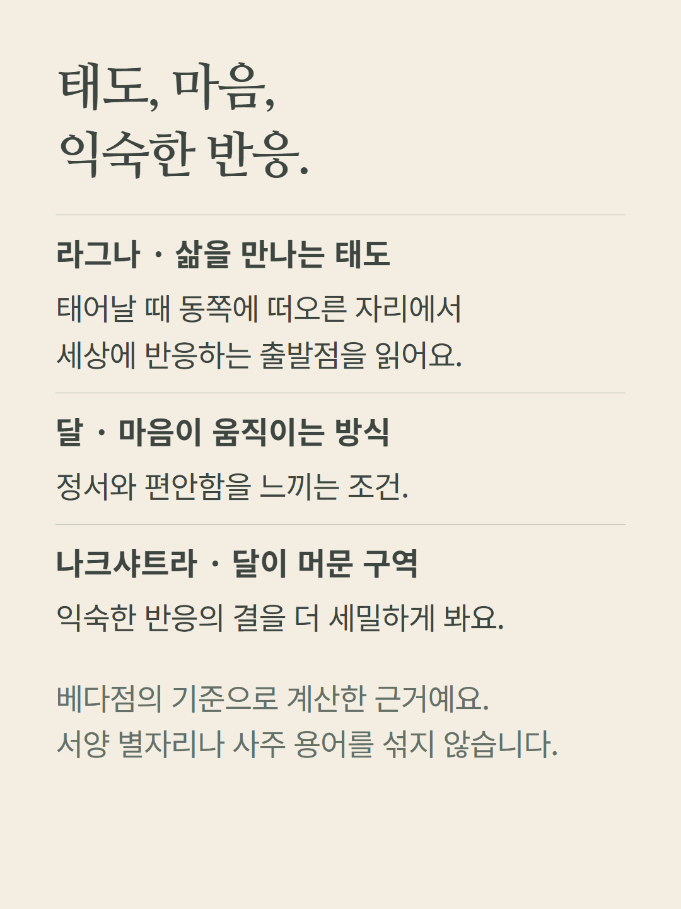
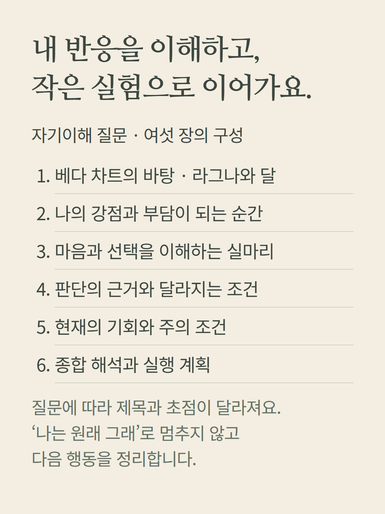
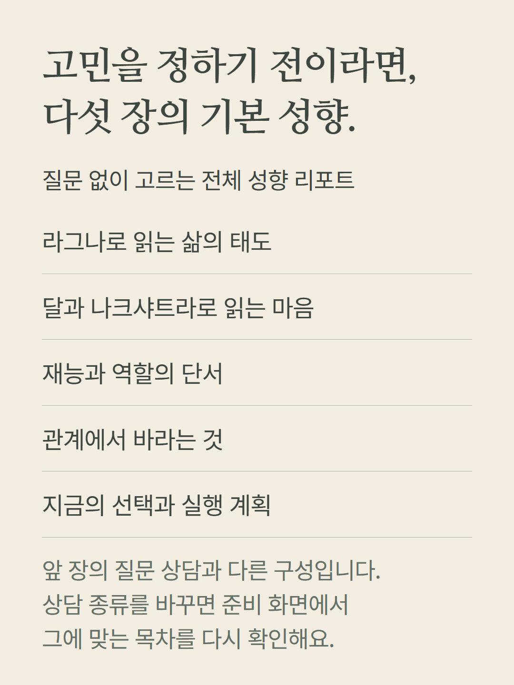
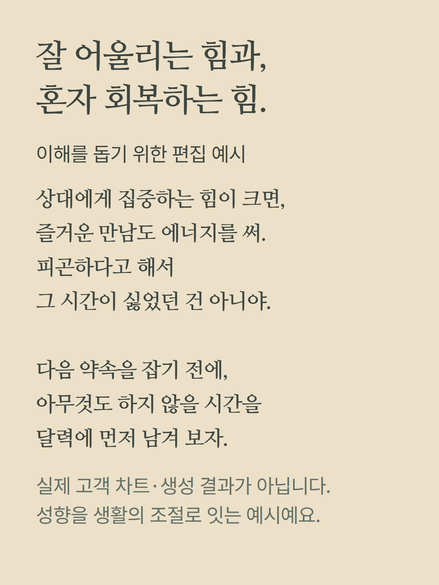
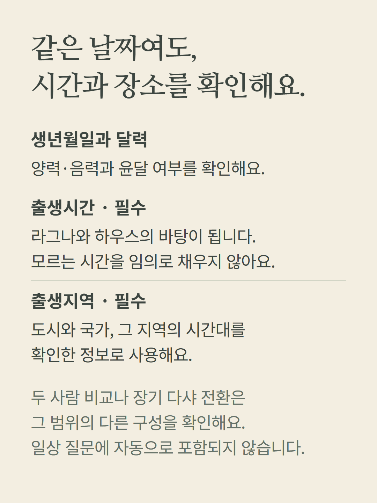
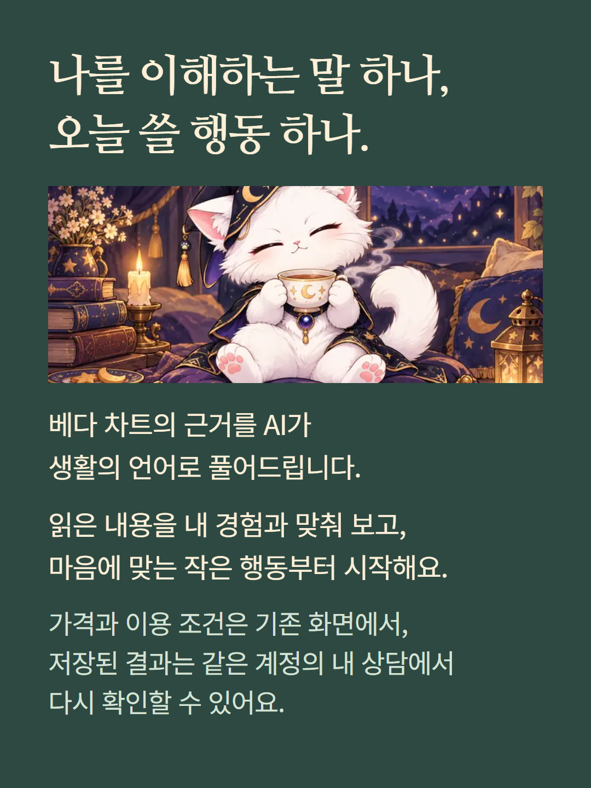

베다점 고등어 질문 상담은 한 가지 일상·개인 관계 고민을 라그나·달·나크샤트라 등 실제 베다 차트 근거로 읽습니다. 질문 상담 6장과 기본 성향 리포트 5장은 다른 구성입니다. 서양 점성술이나 사주의 기준과 섞지 않습니다. 생년월일·달력·출생시간·출생지역이 필요하며 시간대를 확인합니다. 두 사람 차트 비교와 현재·다음 장기 다샤의 전환은 별도 범위입니다. 사례는 실제 고객 결과가 아닌 편집 예시이며 AI가 계산 근거를 풀어 씁니다. 가격과 추가 질문 조건은 기존 준비 화면에서 확인합니다.